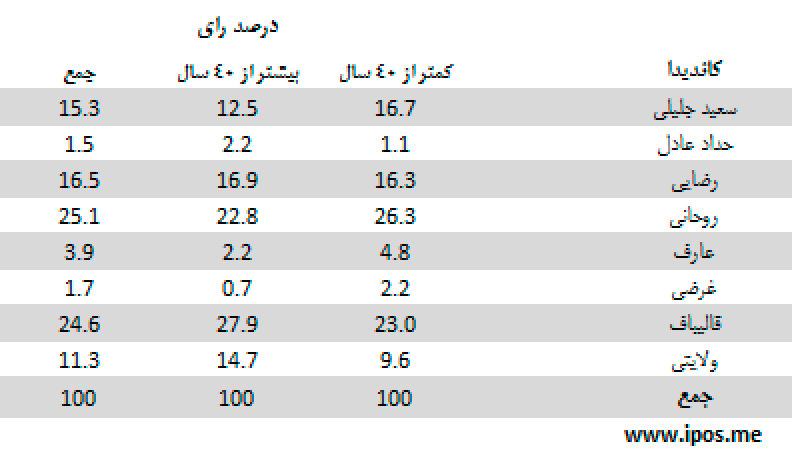

مهمترین یافتهها:
- آخرین نظرسنجی iPOS در روز سه شنبه 21 خرداد، بیانگر پیشی گرفتن حسن روحانی از باقر قالیباف با درصد رای 26.6 برای آقای روحانی در مقایسه با 24.8 برای آقای قالیباف است. این آرا بر اساس محاسبه رای هر یک از نامزدها در میان پرسش شوندگانی است که نامزد نهایی خود را انتخاب کرده اند. رتبه های بعدی را آقایان رضایی با 16.3 درصد، جلیلی با 13.7 درصد، ولایتی با 10.7 درصد، عارف با 5.1 درصد، غرضی با 1.5 درصد و حداد عادل با 1.3 درصد به خودشان اختصاص داده اند.
- در میان اصلاح طلبان آقای روحانی همانند روزهای گذشته به روند صعودی خود ادامه داده و برای اولین بار، آقای قالیباف را از رتبه اول پایین آورده است. آرای آقای روحانی با 232.5 درصد افزایش نسبت به روز 17 خرداد (روز مناظره سوم) به 26.6 درصد رسیده است. آرای ایشان از روز دوشنبه 20 خرداد، نسبت به سه شنبه 21 خرداد که همراه با کناره گیری آقای عارف از نامزدی انتخابات بود، 84.72 درصد افزایش پیدا کرده است.
- در میان اصول گرایان آقای قالیباف کماکان به روند نزولی خود پس از مناظره سوم در روز جمعه 17 خرداد ادامه می دهد. آرای آقایان جلیلی و ولایتی هم در نظرسنجی روز سه شنبه 21 خرداد کاهش یافته است. در مورد آقای جلیلی بعد از یک روند صعودی 5 روزه که از 15 خرداد آغاز شد، در روز سه شنبه آرای ایشان دوباره روند نزولی را طی کرد و از 16.5 درصد به 13.7 درصد رسید. در اردوگاه اصول گرایان آرای آقای رضایی روند تقریبا ثابت روزهای گذشته را ادامه و این بار هم 16.3 درصد آرا را به خودش اختصاص داده است. آقای رضایی که در روز دوشنبه 20 خرداد برای اولین بار از آقای جلیلی عقب افتاده بود، در روز سه شنبه جبران کرد و از آقای جلیلی پیشی گرفت.
- یافته مهم دیگر این نظرسنجی کاهش دوباره آرای تصمیم نگرفته است که از رقم 47 درصدی در روز دوشنبه 20 خرداد به 42 درصد در روز سه شنبه 21 خرداد رسیده است.
- با توجه به اینکه محاسبات آماری به صورت چرخشی حساب می شوند (محاسبات آماری روز سه شنبه با دوره چرخش 3 روزه انجام شده است)، بخشی از آرای 47 درصدی تصمیم نگرفته به دلیل تاثیر آرای روزهای پیشین بر نتایج نظرسنجی روز سه شنبه است. پیش بینی می شود طی دو روز آینده که دوره گردش کاهش پیدا کند، آرای تصمیم نگرفته باز هم سقوط کنند. احتساب درصد رای برای آقایان عارف و حداد عادل هم در گزارش روز سه شنبه 21 خرداد به همین دلیل است.
- اگر آرای کاندیداها را در میان کل آرا (با احتساب آرای تصمیم نگرفته) مورد محاسبه قرار دهیم به این نتیحه می رسیم که انتخابات دو مرحله ای خواهد بود و هیچ یک از نامزدها رای 50 درصدی مرحله اول را بدست نمی آورند. بر این اساس آرای هر یک از کاندیداها به قرار زیر است:
- روحانی: 13.3 درصد، قالیباف: 12.4 درصد. رضایی: 8.1 درصد، جلیلی: 6.9 درصد، ولایتی: 5.4 درصد، عارف: 2.6 درصد، غرضی: 0.8 درصد و حداد عادل: 0.6 درصد
سئوال: اگر قرار بود همین امروز در انتخابات ریاست جمهوری شرکت کنید به کدام یک از کاندیداها رای میدادید؟

این جدول نشان میدهد پاسخدهندگانی که میگویند در انتخابات شرکت میکنند، از نظر تصمیمگیری برای رای دادن در چه و ضعیتهایی قرار دارند.
سئوال: اگر قرار بود همین امروز در انتخابات ریاست جمهوری شرکت کنید به کدام یک از کاندیداها رای میدادید؟

این جدول نشان میدهد از میان پاسخدهندگانی که میگویند در انتخابات شرکت میکنند، و از میان 8 نامزد موجود یک نفر را انتخاب کردهاند، هریک از نامزدها چه میزان رای دارند.
جدول زیر میزان اقبال به نامزدها را بر اساس جنسیت (زن و مرد) نشان میدهد:

در جدول زیر میزان آرای نامزدها در میان دو گروه سنی (کمتر از 40 سال و بیشتر از 40 سال) مقایسه شده است:

انتخاب رای دهندگان در جدول زیر بر اساس سطح تحصیلات (بدون تحصیلات دانشگاهی و دارای تحصیلات دانشگاهی) مقایسه شده است:

تحلیل:
میزان مشارکت
- میزان مشارکت در این نظرسنجی همچنان بالای 70 درصد است. اگر درصد بالایی از کسانی را که از پاسخ به سوالات ما امتناع کردهاند، معادل کسانی فرض کنیم که در انتخابات شرکت نخواهند کرد و به همین دلیل از پاسخ به سوالات مربوط به انتخابات سرباززدهاند، آنگاه میزان مشارکت به مقدار قابل توجهی کاهش خواهد یافت.
- با این همه باید افزود میزان مشارکت بالا در این نظرسنجی لزوماً معادل همان میزان از نسبت شرکت کنندگان در روز انتخابات نیست. در نظرسنجیها، معمولاً میزان «اعلام مشارکت»، بیش از میزان «مشارکت عملی» در روز انتخابات است. تفاوت «مشارکت اعلامی» و «مشارکت عملی» فقط به ایران اختصاص ندارد.
- اعلام مشارکت بالا، فقط جنبهی سیاسی هم ندارد که ناشی از ترس در پاسخ به این سوال باشد، بلکه می تواند ناشی از این واقعیت ساده باشد که وقتی از مردم برای شرکت در انتخابات سوال می شود آنان فقط باید تمایل خود را «اعلام» کنند اما نیاز به «عمل» (شامل آماده شدن، رفت و آمد، هزینههای زمانی و مادی) برای رای دادن ندارند. حال آن که در روز رای گیری آنان باید همه این اعمال را انجام دهند، که به سادگی اعلام یک کلمه «بله» نیست.
- اعلام مشارکت بالا، همچنین می تواند تا حدی نیز ناشی از ملاحظات روانشناسی سیاسیِ حاکم بر جامعهی ایران باشد، ملاحظاتی که می تواند مردم را به همنوایی با خواست حکومت مبنی بر لزوم شرکت در انتخابات سوق دهد. این همنوایی می تواند نوعی اریبی روشمند در داده های مربوط به میزان مشارکت ایجاد کند.
- با توجه به همهی این ملاحظات ارقام میزان مشارکت در این نظرسنجی را باید با احتیاط تفسیر کرد.
رای به نامزدها بر اساس سن، جنس و تحصیلات پاسخ دهندگان
تحلیل آرای نامزدها بر اساس جنسیت، سن، تحصیلات، از نظر آماری رابطهی معنی داری بین این عوامل و رای به نامزدها را نشان نمیدهد. به علاوه این رابطهها سیال است و در بسیاری از موارد روز به روز تغییراتی را نشان میدهد که حاکی از تاثیر نمونه بر آن است. با این همه برخی تفاوتها، با رعایت ملاحظات گفته شده، قابل ذکر است:
- بررسی آرای نامزدها بر اساس جنسیت پاسخگویان نشان می دهد از میان کسانی که به آقای قالیباف رای می دهند، نسبت زنان اندکی بیشتر از مردان است.
- همچنین می توان گفت، در میان رای دهندگان به آقایان جلیلی، روحانی و قالیباف، افراد کمتر از 40 سال نسبت بیشتری از افراد بالای 40 سال دارند.
- از نظر سطح تحصیلات، میان رای دهندگان به آقایان جلیلی، روحانی و ولایتی، افراد با تحصیلات دانشگاهی، به نسبت بیشتری به به چشم میخورند.
روش اجرای نظرسنجی
- نظرسنجیهای iPOS منتشر شده در روز سه شنبه 21 خرداد به شیوه چرخشی (Rolling) سه روزه انجام شده است. (به دلیل تاثیر رای روزهای 19 و 20 و 21 خرداد، در نتایج منتشر شده، آرای آقایان عارف و حداد عادل که از کاندیداتوری انصراف داده اند نیز مورد محاسبه قرار گرفته است. پیش بینی می شود در دو روز آینده و با حداقل شدن تاثیر روزهای قبل بر نتایج نظرسنجی، آمار کاندیداهای انصراف داده به صفر برسد.
- نمونهگیری به صورت مرحلهای طبقهبندی شده در سطح استانها است. دارندگان تلفنهای ثابت و همراه در سطح کل کشور واحد نمونه را تشکیل میدهند. حجم نمونه 1067 نفر است.
- یافتههای نظرسنجی را می توان با اطمینان 95 درصد و در فاصلهی اطمینان 3 درصد به کل افراد بالای 18 سال ایرانی ساکن ایران تعمیم داد.
- مصاحبهها به صورت تلفنی و با پرسشگران آموزش دیده در طول ساعات فعال هرروز انجام میشود.